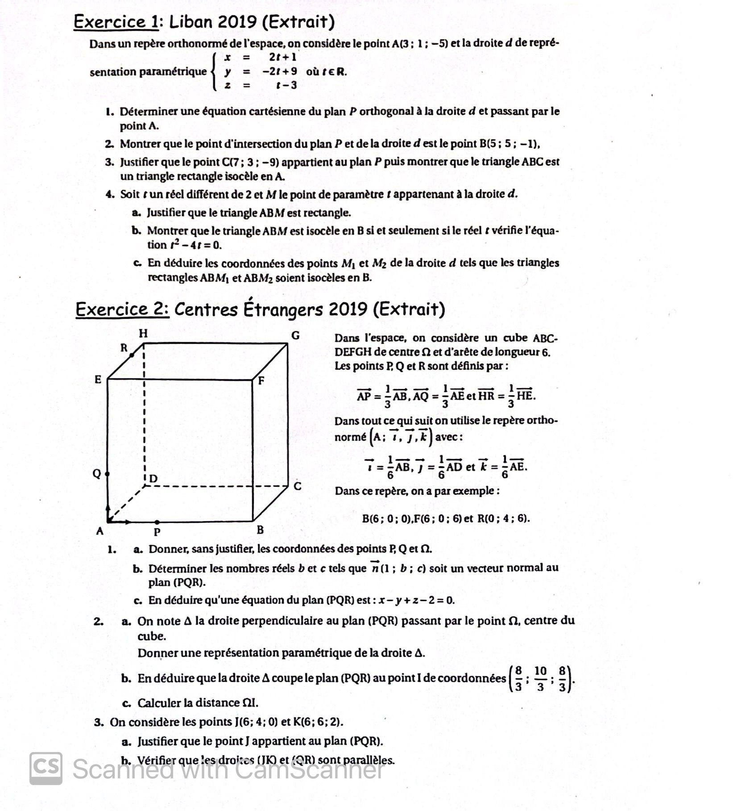
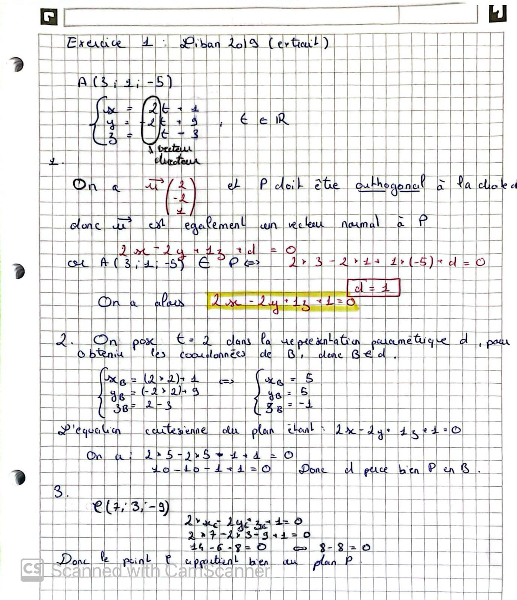

Introduction
La géométrie dans l'espace joue un rôle essentiel en terminale. Elle repose sur la maîtrise du calcul vectoriel et de l'étude des droites et des plans. Cette partie est cruciale pour les applications en physique, ingénierie et sciences mathématiques.
1. Calcul vectoriel
Notions fondamentales
- Vecteur position : \(\vec{OM} = (x, y, z)\)
- Opérations sur les vecteurs : addition, soustraction, produit par un scalaire
- Produit scalaire : \(\vec{u} \cdot \vec{v} = x_1x_2 + y_1y_2 + z_1z_2\)
- Produit vectoriel : \(\vec{u} \wedge \vec{v}\) selon la règle des déterminants
- Soit \(A = (xa, ya, za)\) et \(B = (xb, yb, zb)\) deux points de l'espace
- \(\vec{AB} = (xb-xa, yb-ya, zb-za)\)
- \(A = (xb-xa, yb-ya, zb-za)\)
2. Droites dans l'espace
- Représentation paramétrique d'une droite : \(\vec{r}(t) = \vec{a} + t \cdot \vec{u}\)
- Condition de parallélisme de deux droites
- Intersection de deux droites
3. Plans dans l'espace
- Équation cartésienne d'un plan : \(ax + by + cz + d = 0\)
- Vecteur normal au plan
- Parallélisme et orthogonalité de deux plans
- Intersection d'un plan et d'une droite
4. Sections de plans
- Intersection d'un plan avec un autre plan
- Section d'un solide par un plan
- Utilisation des sections dans les problèmes de géométrie
Correction des Exercices

Enoncé

Correction partie 1